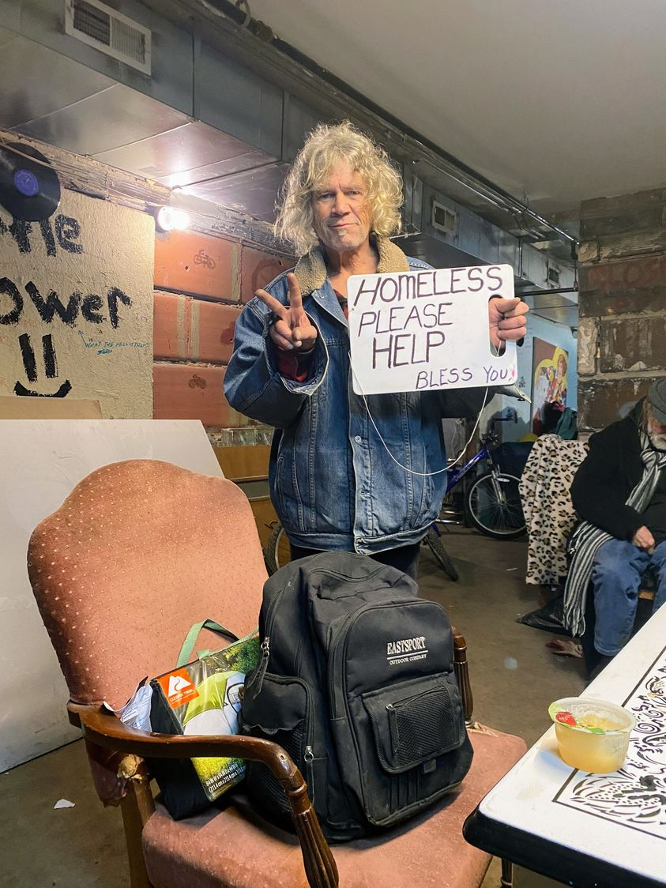

Timeline photos
This is Randy with a sign he recently made on a found cutting board.
There are many people who think most people who panhandle (homeless people call it "flying a sign") are fakes. That they aren't really homeless.
I'm sure some of them are lying. But I'm here to tell you... in Akron, most people are being honest with their signs.
There is a regular panhandler at the corner of West Market and Hawkins. His name is Leroy. He lives behind Mr. Hero up in Highland Square. Virtually every day, regardless of the weather, he rides his bike down that hill in the morning, flies his sign all day, and then rides his bike all the way back up that hill at night. He sees what he does as a service to people. He's giving people the opportunity to feel good about helping. I love that perspective.
All Leroy's sign says is: "HELP". He never will tell you he's homeless. And his sign doesn't say he's homeless. I have no idea what his financial situation is. It's none of my business.
There is a woman who I haven't met yet. She's been down in the Fairlawn area recently. She often has a sign that says she's pregnant. She's been flying that sign for years. Sometimes, she has an oxygen tank with her. People on Nextdoor hate her because they say she's lying. I REALLY need to go meet her. She very well might truly believe she's pregnant. Or maybe she really is a scammer. I've got to find out.
As for Randy, he's definitely not lying. He's as homeless as they come. 18 years in the old Mansfield prison has made him claustrophobic. He doesn't like small spaces. Being outside is much more comfortable for him.
Randy is 67 years old and can't get his social security sorted out. He has people helping him with the process. But he's been trying to get his social security check for the last year with no luck. I think it's hard with no phone and no address.
Randy quit drinking. I don't think he smokes meth. His favorite drug of choice is a little bit of weed... which is now completely legal.
So, what should you do? Should you give them money or food or something?
This is what I tell people: Only do what you feel like doing. Giving is an extreme form of connection. It's a spiritual act. The spirit is this invisible form of connection that can't be seen or proven by science... but, if we're honest, we all know perfectly well that it exists. A universal connection between every single thing in the universe is real. You know it, and I know it.
If you are feeling like you want to dip into that spiritual connection, give something. If you are feeling like you don't want to be part of it right now, don't give.
But once you give something, you must let it go. That person can do whatever they want with what you give. It is no longer yours. It is theirs. Let it go. Because otherwise, you really haven't given anything. You've just hired someone to pleasure you. It would have been much better to not give anything at all.